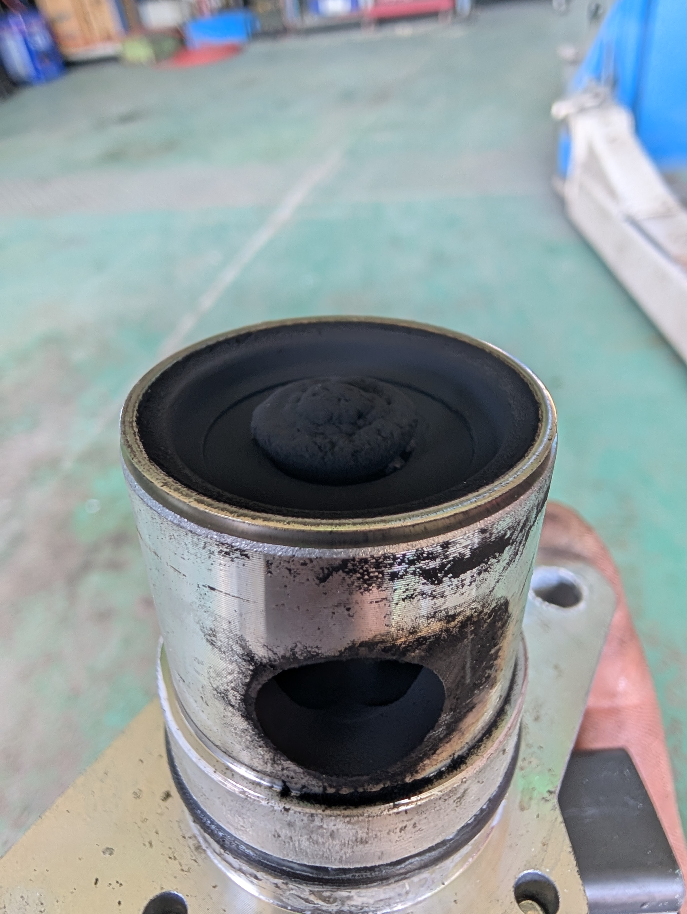
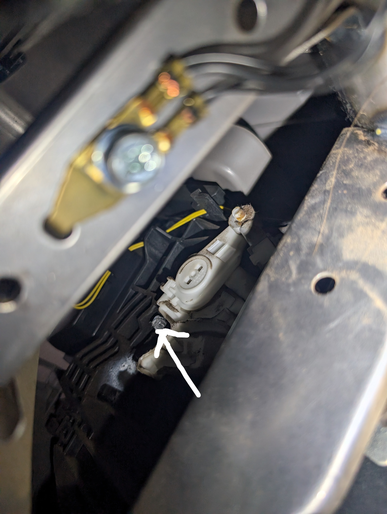
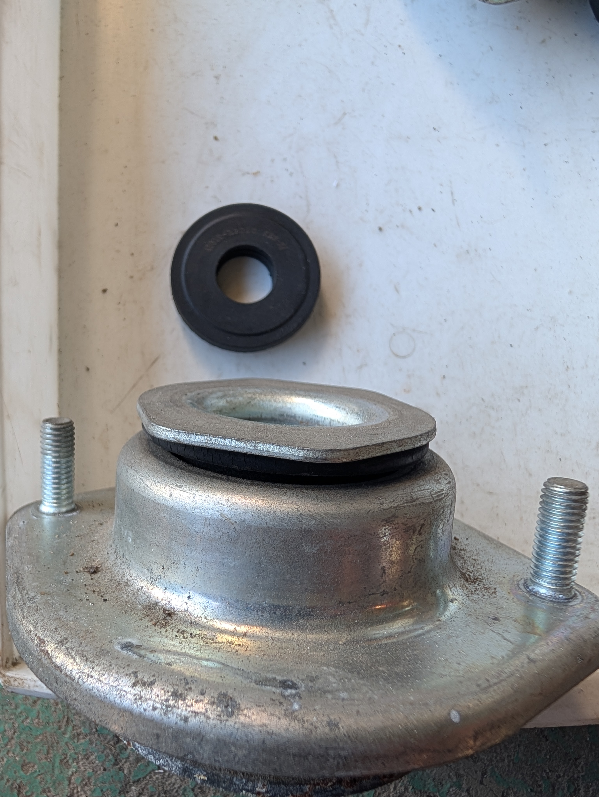

エンジン・故障診断
エクストレイル p1402 診断記録

故障コードと診断・修理内容の記録
実際に点検・修理した車の記録をまとめています。
エンジン・故障診断

故障コードと診断・修理内容の記録
駆動系・4WD

4WD切り替えが遅れ、数秒後に衝撃が発生。 ソレノイド交換で症状が改善した事例。
駆動系・ATシフト機構

シフトノブ内部の摩耗による解除不良。 芯を肉盛り補修して正常作動を確認した事例。
足回り・異音

走行中のゴトゴト音で入庫。持ち込み社外部品への交換後、 切り返し時に異音が発生。純正部品への交換で解消した事例。
エンジン・冷却系統
サブタンクの冷却水が黒く変色。 排気ガスの混入を疑い、ヘッドガスケットを交換した事例。
駆動系・プロペラシャフト

ブーツが破れてグリスが飛散。 補修部品の生産終了によりASSY交換した事例。
詳しい修理内容を見る電装系・メーター

メーター照明の一部が点灯しないため、バルブ2個を交換。 交換後はすべて正常に点灯した事例。